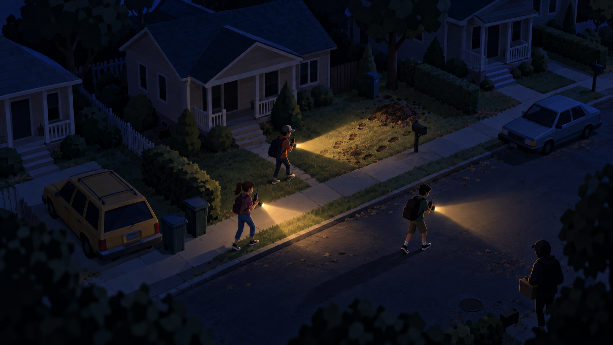
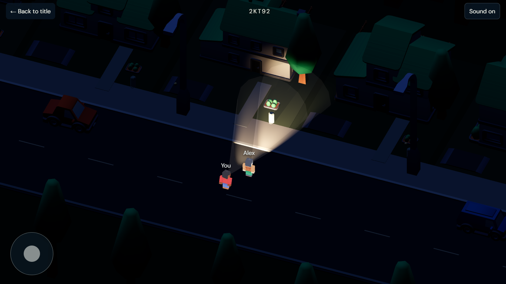

The raised camera, houses above the road, blue darkness, foliage framing and warm beams carry into the game. The supplied blocky characters and simple kit houses have much less detail. Foliage is sparse and geometric; surfaces lack layered grass, leaves and weathering. The beams use simple transparent cones and sharper light pools, rather than the reference's soft atmospheric glow. Only the local flashlight casts shadows. Footprints are outside step 2 and are absent.